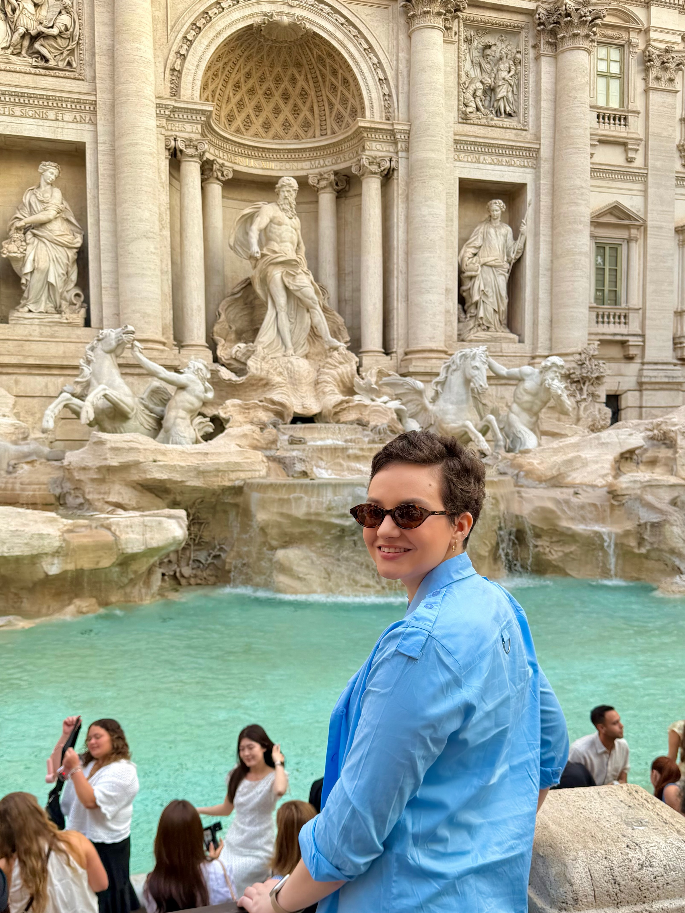

Tratamentos odontológicos personalizados com precisão digital, foco em reabilitação oral e estética natural em Bauru / SP.

Excelência Odontológica
Formada pela prestigiada Unesp de Araraquara, com especialização em Prótese Dentária e foco em Reabilitação Oral.
Sou apaixonada pela estética dental com foco em naturalidade. Cada sorriso é único e merece um planejamento individualizado, integrando saúde, conforto e alta precisão tecnológica.
Formação e base acadêmica de excelência
Foco total em reabilitação oral funcional e estética
Tratamentos modernos e personalizados para a sua saúde bucal.
Restauração de dentes comprometidos com próteses altamente estéticas e resistentes que mimetizam a estrutura natural.
PróteseReabilitação total fixa sobre implantes, devolvendo a mastigação perfeita e a firmeza para sorrir sem receios.
PrótesePróteses removíveis com encaixe perfeito, anatômico e estético, adaptadas ao perfil facial de cada paciente.
PróteseLentes e facetas projetadas para corrigir formato, cor e alinhamento do sorriso de maneira extremamente harmoniosa.
EstéticaPequenos ajustes anatômicos nas bordas dos dentes que transformam o design geral do sorriso de forma sutil.
EstéticaTécnicas modernas e seguras para clarear os dentes mantendo a integridade do esmalte e sem desconforto.
EstéticaRemoção de tártaro e placa bacteriana com ultrassom digital para saúde gengival e prevenção contínua.
Clínico GeralRestaurações com resinas de alta tecnologia e isolamento absoluto para garantir máxima durabilidade.
Clínico GeralTecnologia e procedimentos focados no seu conforto, segurança e precisão nos resultados.
Acompanhamento detalhado do seu tratamento com câmera profissional para planejamento de sorriso de alta precisão.
Diagnóstico instantâneo e imediato sem necessidade de deslocamento, reduzindo a exposição a radiação.
Procedimentos mais rápidos, precisos e extremamente silenciosos, reduzindo o ruído tradicional do consultório.
Limpeza e remoção de tártaro com regulagem digital, oferecendo um tratamento confortável e sem sensibilidade.
Restaurações realizadas sob campo isolado, garantindo ausência de umidade para maior durabilidade do trabalho.
Uso de fotopolimerizador Valo, adesivos de primeira linha e lupas cirúrgicas para máxima acurácia técnica.
Arraste o divisor para comparar o Antes e Depois dos tratamentos realizados pela Dra. Amanda Papoti.
A satisfação e a renovação da autoestima de quem confiou em nosso trabalho.
"Serviço de excelência! Profissional capacitada, atenciosa e cuidadosa! O resultado final do meu procedimento superou as expectativas e senti muita segurança pelo acompanhamento durante o processo! Recomendo!!!"
"Entrei uma pessoa e saí outra. A melhor coisa que fiz na vida até hoje. Paciência, cuidado, respeito definem minha experiência com a Dra Amanda."
"Foi uma ótima experiência, desde o acolhimento, planejamento e procedimento! Dra Amanda Papoti e as meninas da clínica Vivace foram super atenciosas, foi transformador pra mim! Voltei a sorrir! Sou muito grata!"
Entre em contato se você deseja cuidar da sua saúde bucal da melhor forma, com um atendimento acolhedor e infraestrutura moderna.
Rua Guilherme de Almeida, 2-31
Bauru - SP